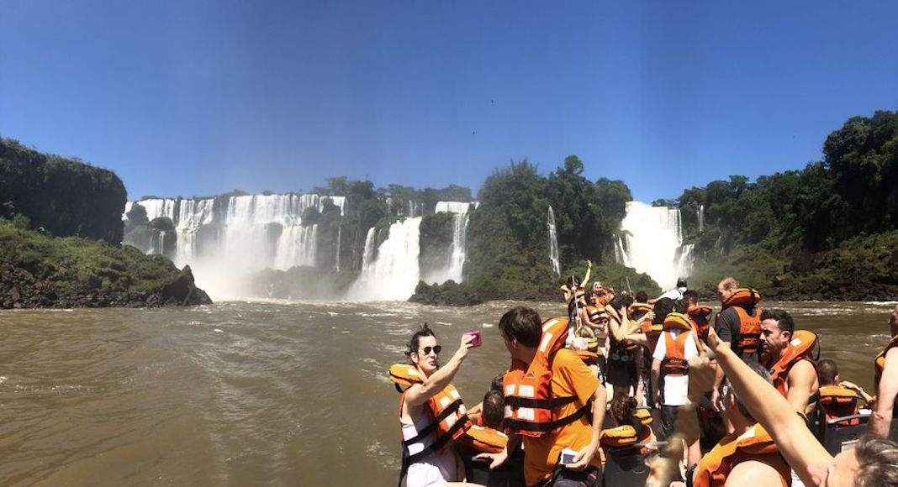
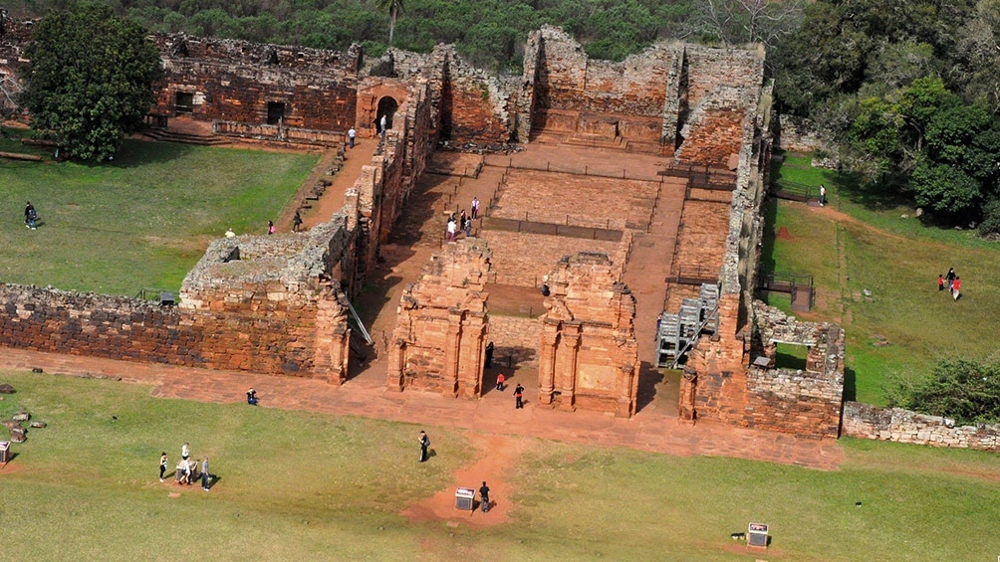

Naturaleza privilegiada y destinos culturales e históricos se conjugan en esta provincia, Argentina. Tierra colorada, imponentes saltos de agua e impenetrable selva son su mejor carta de presentación ante el mundo.
El sitio más emblemático de esta ciudad son las Cataratas del Iguazú ubicadas dentro del Parque Nacional Iguazú. Es un monumento natural que no puedes dejar de conocer. Es una de las 7 maravillas del mundo, Están ubicadas justo en la frontera entre Paraná, Brasil, y la provincia de Misiones. En total tienen 275 saltos de hasta 70 metros de altura, son un verdadero espectáculo que te impresionará. Al adentrarte en ellas por sus pasarelas mimetizadas vivirás la experiencia de estar en plena selva. Así avistarás muy cerca estas caídas de agua y conocerás la Garganta del Diablo, el pico más alto.
Ahí escucharás con fuerza el rugir de la naturaleza expresada en el agua. Más de un millón de turistas de otros países visitan Argentina cada año solo para ir a las Cataratas del Iguazú. La idea es que recorras los senderos de este lugar caminando o en un pintoresco trencito a combustión de gas. Hay dos circuitos dispuestos para que puedas apreciar este monumento de la naturaleza:
La experiencia en las Cataratas del Iguazú tienes que vivirla a plenitud en tu estadía en Misiones. Al salir desde de la estación Cataratas, llegarás a la pasarela que pasa por el río superior. Desde ahí arriba cada paso que des te impresionará por el fantástico paisaje.
Después llegarás al borde del balcón de la Garganta del Diablo. Ese será el sitio ideal para hacer todas las fotos que quieras porque en palabras no podrás expresar lo vivido. Verás lo fuerte y gran del caudal. En el camino completo conocerás los siguientes saltos:
Es un recorrido que une los principales atractivos del noreste de Corrientes y Misiones. Se trata de territorios que antiguamente ocupaban las Misiones Jesuíticas, este es otro de los lugares turisticos en Misiones
Fue en esas tierras dónde se inició el cultivo controlado de la Yerba Mate que podrás conocer a fondo.
Finalmente, podrás visitar una de las mejores zonas de toda la provincia la cual presenta una verdadera experiencia en busca de aventuras y lugares inolvidables. Se trata de San Ignacio, una localidad que se halla cerca de Posadas, el ultimo de lo lugares turisticos en Misiones.
Este mismo posee un centro de turismo en donde podrás hacer arreglos para visitar zonas naturales hermosas como lo son el Parque Nacional Peñón del Teyú o el rio Yabebirí.
Si en la noche quieres conseguir un poco de actividad, podrás hacerte de ver un espectáculo de luz que se realiza en las pantallas sobre el agua, en donde se mostrará toda la historia de Misiones junto con coloridas fotos y música instrumental de lo más exquisita.
